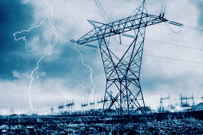
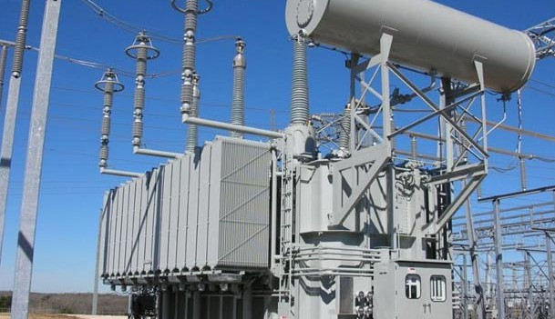
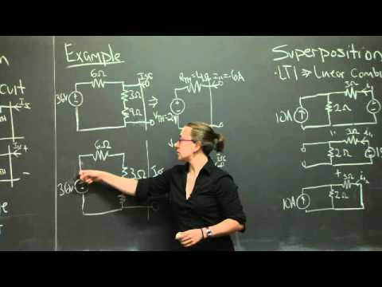

Name of Department: Electrical and Electronics Engineering
Mission Statement:
M1- To transform young minds into productive Electrical engineers using technical knowledge and professional skills through contemporary curriculum and effective learning system with continuous evaluation.
M2- To provide students exposure to modern engineering tools and innovative projects to become globally competent Electrical engineers embedded with ethical values and leadership capabilities.
M3- To serve the people of state and nation by providing quality education with co-curricular and extracurricular activities to students for all round development.
 
Vision Statement:
To build a department of global repute for providing technical ability and professional skills in the field of Electrical and Electronics Engineering.
Brief Profile of Department:

The department of Electrical & Electronics Engineering (E&EE), is one of the three branches of Diploma Engineering started at CCCT in the year 2005. At present , there are five M. Tech faculties specialized in various fields of Electrical & Electronics Engineering. About 20 research papers have been published by the E & EE faculty and student till date in various international journals and conferences. Apart from the Diploma Course in E&E Engg., the department also offers an short term courses on various topics. The department is recognized as a research centre by the Power and Energy Department , Government of Sikkim for the execution of Suryamitra Project. These projects are being guided by the professional society.
The department has a large number of highly qualified and experienced faculties. The department has received so far the total amount of about Rs. 45 Lakhs from various Governement funding agencies. The department has excellent laboratory and well equipped computer center facilities which are useful to the students, research scholars as well as for industrial consultancy work.